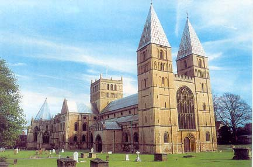
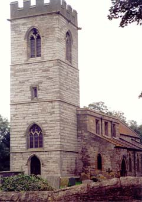
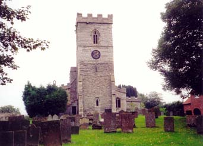

| Follow the above link to the main page for this topic or click the graphic below to visit the Homepage. |
 | Photo Gallery: Nottinghamshire Churches Lisa A. Maurier - Grimsby, Lincolnshire Lucrezia Herman - Don't Blink Productions - Nottingham Jess Atkins & Hillary Hallam - Lincolnshire |
| St. Peter's & St. Paul's, Upton, Nottinghamshire |
 |
| St. Peter's & St. Paul's, Upton, Nottinghamshire. Photo Courtesy of Lisa A. Maurier. Back Button to Return. |
 |
Southwell Minster, Southwell Photo Courtesy of Lisa A. Maurier. Back Button to Return. |
| Southwell Minster, Southwell Another view of Southwell Minster Courtesy of Lucrezia Herman of Don't Blink Productions, Nottingham. Back Button to Return. |
 |
 |
St. Giles, Cromwell Photo Courtesy of Lisa A. Maurier. Back Button to Return. |
| St. Wilfrid, North Muskham Photo Courtesy of Lisa A. Maurier. Back Button to Return. |
 |
 |
Holy Trinity Parish Church, Rolleston Photo Courtesy of Lisa A. Maurier. Back Button to Return. |
| St. Wilfrid, South Muskham Photo Courtesy of Lisa A. Maurier. Back Button to Return. |
 |